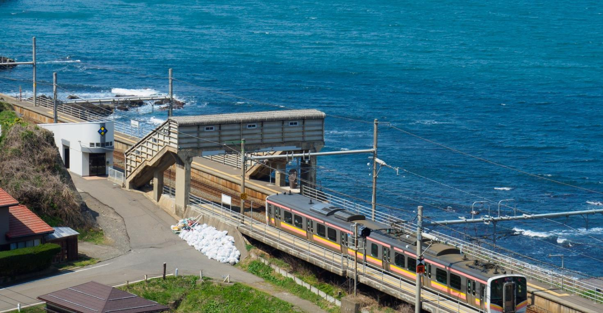

青海川駅（青海川站）¶

柏崎駅から普通列車でわずか2駅。列車を降りるやいなや、波音と青色に全身が包まれました。ここ青海川駅は日本海に最も近い駅。隣は海水浴場の狭い浜で、日本海の白波がホームにも届きそうな勢いで迫ります。ホームからの眺望もさることながら、駅を取り囲む崖の上から見下ろす日本海もまた格別。「徒歩0分の景勝地」ながら、ぜひ歩いて楽しみたい駅です。
長岡駅から普通列車で約50分。本数は1〜2時間に1本。無人駅。
訪問：2012年8月、2017年4月 / 更新：2018年7月17日
从柏崎站坐普通列车只有2站。 刚下火车，全身都被波音和蓝色包裹着。 这里青海川站是离日本海最近的车站。 旁边是海水浴场狭窄的海边，日本海的白浪好像也能到达站台。 除了从站台眺望之外，从围绕车站的悬崖上俯瞰的日本海也很特别。“ 是“步行0分钟的风景胜地”，是一定要走着去享受的车站。
从长冈站坐普通列车约50分钟。 数量是1~2小时1瓶。 无人车站。
访问：2012年8月，2017年4月 / 更新：2018年7月17日
列車を降り立つと、隣は青海川海水浴場の砂利浜。これほど日本海に近い駅は他にありません。（2012年8月）
下火车后，旁边是青海川海水浴场的砂石滨。 没有比这更靠近日本海的车站了。（ 2012年8月）
ホームから見た日本海。ひたすらに続く水平線。（2012年8月）
从站台上看到的日本海。 一味地延续的水平线。( 2012年8月）